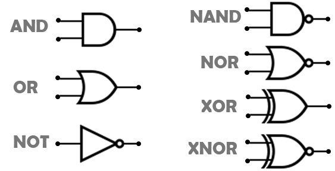

3.1 Compuertas Logicas.
Una puerta logica, o compuerta logica, es un dispositivo electronico con una funcion booleana u otras funciones como sumar o restar, incluyen o excluyen segun sus propiedades logicas. Se pueden aplicar a tecnologias electronicas, electricas, mecanicas, hidraulicas y neumaticas. Son circuitos de conmutacion integradis en un chip. Experimentada con reles o interruptores electrimagneticos para conseguir las condiciones de cada compuerta logica.

3.1.2 Compuerta AND.
La compuerta logica Y, mas conocida por su nombre en ingles AND, realiza la funcion booleana de producto logico. Su simbolo es un punto (.), aunque se suele omitir. Asi, el producto logico de las variables A y B se indican como AB, y se lee A y B o simplemente A por B. La ecuacion caracteristica que describe el comportamiento de la puerta AND es:

La tabla de verdad de la siguiente compuerta es la siguiente:
3.1.3 Compuerta OR.
La compuerta logica O, mas conocida por su nombre en ingles OR, realiza la operacion de suma logica. La ecuacion caracteristica que describe el comportamiento de la puerta OR es:

Su tabla de verdad es la siguiente:
3.1.4 Compuerta NOT.
La puerta logica NO, mas conocida por su nombre en ingles NOT, realiza la funcion booleana de inversion o negacion de una variables logica. Una variable logica (A) a la cual se le aplica la negacion, se pronuncia como "No A" o "A negada". La ecuacion caracteristica que describe el comportamiento de la puerta NOT es:
Su tabla de verdad es la siguiente:
3.1.5 Compuerta NAND.
La compuerta logica NO-Y, mas conocida por su nombre en ingles NAND, realiza la operacion de producto logico negado. En ocasiones es llamada tambien borra de Sheffer. La ecuacion caracteristica que describe el comportamiento de la compuerta NAND es:
Su tabla de verdad es la siguiente:
3.1.6 Compuerta NOR.
La compuerta NO-O, mas conocida por su nombre en ingles NOR, realiza la operacion de suma logica negada, En ocasiones es llamada tambien barra de Pierce. La ecuacion caracteristica que describe el comportamiento de la puerta NOR es:
Su tabla de verdad es la siguiente:
3.1.7 Compuerta XOR.
La compuerta logica OR-exclusiva, mas conocida por su nombre en ingles XOR, realiza la funcion booleana A'B + AB'. La ecuacion caracteristica que describe el comportamiento de la compuerta XOR es:
Su tabla de verdad es la siguiente:
Se puede definir esta puerta como aquella que da por resultado uno, cuando los valores en las entradas son distintos. ej: 1 y 0, 0 y 1 (en una compuerta de dos entradas). Se obtiene cuando ambas entradas tienen distinto valor.
Si la puerta tuviese tres o más entradas, la XOR tomaría la función de suma de paridad, cuenta el número de unos a la entrada y si son un número impar, pone un 1 a la salida, para que el número de unos pase a ser par. Esto es así porque la operación XOR es asociativa, para tres entradas escribiríamos: A+(B+C) o bien (A+B)+C.Su tabla de verdad sería:
3.1.8 Teoremas y Postulados algebra de Boole.
Un álgebra de Boole es toda clase o conjunto de elementos que pueden tomar dos valores perfectamente diferenciados, que designaremos por 0 y 1 y que están relacionados por dos operaciones binarias denominadas suma (+) y producto (.) (la operación producto se indica en general simplemente mediante la ausencia de símbolo entre dos variables) lógicos.
a)
Ambas operaciones son conmutativas, es decir, si a y b son elementos del álgebra, se verifica:- a + b = b + a a . b = b . a
b)
Dentro del álgebra existen dos elementos neutros, el 0 y el 1, que cumplen la propiedad de identidad con respecto a cada una de dichas operaciones:- 0 + a = a 1 . a = a
c)
Cada operación es distributiva con respecto a la otra:- >a . (b + c) = a . b + a . c a + (b . c) = (a + b) . (a + c)
d)
Para cada elemento, a, del álgebra existe un elemento denominado, ā , tal que:- a + ā = 1 a . ā = 0
3.3 Metodologia del diseño.
- • Enunciar el problema
- • Determinar el número requerido de variables de entrada y el número requerido de variables de salida.
- • Asignar letras a las variables de entrada y a las de salida.
- • Deducir la tabla de verdad que define las relaciones entre las entradas y las salidas.
- • Obtener la(s) función(es) de Boole simplificada(s) (utilizando el álgebra de Boole, Mapas de Karnaugh u cualquier otro) para cada salida.
- • Dibujar el diagrama lógico.
- • Dibujar el diagrama eléctrico (opcional).
- • Para n variable de entrada, hay 2 n combinacionales posibles de valores de los valores binarios de entrada.
- • Para cada combinación posible de entrada, hay una y sólo una combinación de salida posible.
- • Un circuito combinacional puede describirse por m funciones de Boole.
- • Cada función de salida se expresa en términos de n variables de entrada.
Procedimiento de circuitos combinacionales.
3.4 Circuitos Combinacionales.
Un Circuito combinacional. Está formado por funciones lógicas elementales ( AND, OR, NAND, NOR, etc. ), que tiene un determinado número de entradas y salidas. Es un circuito cuya salida depende solamente de la "combinación" de sus entradas en el momento que se está realizando la medida en la salida. Los circuitos de lógica combinacional son hechos a partir de las compuertas básicas compuerta AND, compuerta OR, compuerta NOT. También pueden ser construidos con compuertas NAND, compuertas NOR, compuerta XOR, que son una combinación de las tres compuertas básicas.